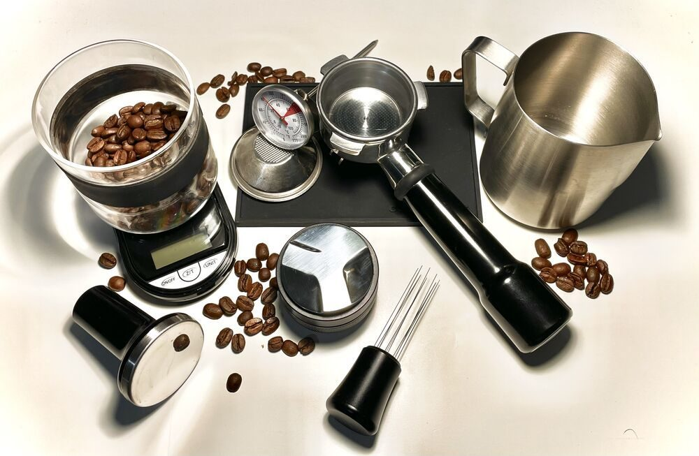

店のこと
確認できていること
お店の紹介は準備中です。ここでは、このサイトの図の見かたをご案内します。
図の見かた
上から見た盤と、横から見た脚
トップページの図は、上から見た盤と、横から見た脚を一枚にまとめたものです。番号1から6が、下の部位に対応しています。制作側の連想で、お店の理念・由来とは無関係です。実際の競技台や製品の仕様を示すものではありません。
凡例
部位のおさらい
- 1ラシャ盤の面いっぱいに張る、なめらかな布。
- 2クッション盤の縁の内側にある、球をはね返す部分。
- 3ポケット盤の四隅と長い辺の中ほどにある、球を落とす穴。
- 4レール盤をぐるりと囲む、木の縁取り。
- 5ダイヤモンドレールに等間隔で並べる、位置を測るための印。
- 6脚盤の天板を下から支える柱。
ギャラリー(イメージ)
カップとコーヒー道具の写真



写真はイメージです。お店のものではありません。
ご案内
確認できた情報
| 所在地 | 〒901-2201 沖縄県宜野湾市新城１丁目３０−８−１０２ |
|---|---|
| 電話 | 準備中 |
| 営業時間 | 準備中 |
| 定休日 | 準備中 |
| ご予約 | 準備中 |
| 駐車場 | 準備中 |
| SNS | Instagram @zumicafeokinawa |